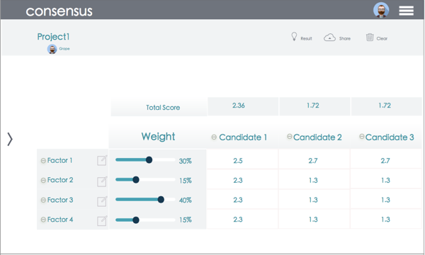

ConsensUs
ConsensUs is a web application as a group-decision-making tool to summarize complex group evaluation.
ROLE
Front End / UX Design / UI Design
Agency
ProtoLab @ Carnegie Mellon University
Date
7 - 8 / 2015
Groups often face difficulty reaching consensus. For complex decisions with multiple latent criteria, discourse alone may impede groups from pinpointing fundamental disagreements. To help support a consensus building process, we created ConsensUs, a novel web application that help make decisions through a shared decision matrix and highlights disagreements in comparative decisions.
In this project, I worked with one partner (Ming Yang) and the advisor Prof. Steven Dow in Protolab, HCII @ CMU. We designed and then implemented this tool in 6 weeks, during which we conducted competitive analysis, making functional prototypes, wireframes and high-fidelity prototypes, and finally implemented by using Meteor.js frame and MongoDB when I contributed 90% of the code.
Functional Prototyping
The first prototyping version was created by Google Sheet. Every participant can evaluate different mensions for the decision. They can also set the weight for each factor. The result page will show the average of the score, so as to help the group to make a decision.
-
Through #piloting, we found that the approach of shared evaluation matrix did help the users.
-

Design
-

-
The group discuss different options and factors that affect their decisions through the chatroom on the left. Options and factors can be changed at any time. The chatroom will also be available throughout the process.
-
-
Every participant can weigh the factors according to their own preferences. They can then give a score for each factor in the evaluation matrix for each option. The total score for each option is calculated automatically.
-

-
During the evaluation, participants can comment below each cell. The comments can provide supplementary information to help the participants score and give participants a chance to voice their personal opinions.
-

-
The report page will display the final rankings and scores. The darker colors indicate higher rankings. The cells will also be colored if a factor contains a higher score difference. Participants can then use these information to further discuss and reach a consensus.
Development
Meteor.js was used to accomplish functions including real-time calculation of individual user’s data and report page data, user account management, highlighted different opinions based on standard deviation, notes and chatting room. The back-end database was implemented with MongoDB.
-
My former coding training proved useful in developing the crucial matrix function independently by utilizing meteor.js in only one week.
Problem Investigation
-
Have you ever tried making a decision with a group of people, such as, to decide where to live in a new city for our whole family, or, to choose a destination for Chrismas holiday? How was your experience?
Probably it is not an easy thing to reach a consensus, and we tried to solve this problem. By conducting #competitive analysis among several commercial softwares we proposed to build a shared decision matrix.